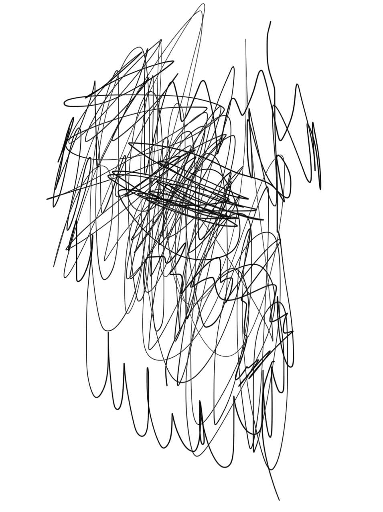

| Python311 | |
| 矢田和啓 | |
| (2016) | |
central dogma（仮題）
留萌のカラバッジョ
呪いの観光名所生駒のコス
モス畑の旗を下げるピーク電気屋
台はきっと流行るだろうか？ 瓢湖ニ
ュースピークヒースの茂みに自殺
者の語りを呼ぶ腹部を笑わ
せないで藤岡、冬牡
丹の可憐に咲く
様を
ピークウォード、
白鯨の迫害、鷹の爪
が生えた土地に咲いた花は
美しく青きドナウはチェコのプ
ラハの城のカフカの過負荷
※ここで、ドグマを修正
します島津シマウマは走る撥鏤バ
チルス延々と続く駅を抜けて
抜けて抜けて行く行く行く
あっあっあっアイコン
が避ける裂ける
が裂け
ね
じきれ
るイコン遺恨
鋳込んだ大学の研
究室を抜けて僕は僕は僕
は就活に走るシマウマ走る僕
はパチルザンパチルザンはパル
チザンメンエントゲーゲン
それを言うならツザン
メン
メン
麺
メンソ
ールになりた
い氷屋が三百ぐら
いで置いてある密室な
うセルロースなよ竹のかぐ
や姫ナノファイバー私は私はた
わしではない寺はないすべての鉄
が鷲掴みにされて回帰するよう
なよ竹のかぐや姫がないよ
うが内容が無いようが
無いようがなんと
でも書ける翔
欠ける歯
車の
中で止
ったわた
詩以外わた
詩じゃないの誰
かがそう言うのマイ
ライフはパーフェクトじ
ゃないのが自然じゃない人工
じゃない生き甲斐じゃない生き
貝じゃない貝じゃないポジ
ション便垂れ私は貝に
なりたい（仮題）
新馬場バンバ
ンジーパ
ソコ
ン
を借
りるかノ
ートにするか
ノートにしよう索
漠とした静岡の空お
茶畑以前藤枝フィールド
に行ったときだったか沢山の
ウニやナマコに触れてア
メフラシもいて新鮮
だったごかいの
ないように
いって
お
くと
カイコは
いなかったそ
の思い出が繭とな
って結実する結実する
という表現は果実に対して
のみ使うのだという言葉が結実
した結実した結実した実がな
った蜜柑が濃学部でゴロ
ゴロ取れる農学部じ
ゃなく実は濃学
部なのだ何
故なら
ノ
ートを
触った人との
出会いがあるから僕が
バカマツタケの実験ノートを
受け継いだときのようにここには
記憶があります記憶は遺伝し
ます異伝は遺伝します
遺伝は遺伝します
だから遺伝子
は書き換
え続け
られ
ますほら
あなたも書き換え
られますここから先は
あなたが書きます→
アイスの封を破る音がする
おたまじゃくしの尾をカッターナイフで切ったときのような音が
t
枯木🍺
の中から溢れ出る泡
純恋歌
❤️ 💚
💙
💛
カラスの糞が滴る音
朝の高速道路の音
父の背骨の音
心音
唇音
🐧
🚗 🌞
爸爸
💓
💋
ネイネイネイルのネイビー
💕アイビーリーグのアイビー
（心ここに在らず
あくがれがために）
レシタティーヴ。
平成の世
長くなるだろう、
☔️、
今、世界に必要なのは、
悪寒よりも暴力だ、
それも母親の胎内から、
引き降ろされるような、
🐷🐷🐷
🐷青色だ、青色だ、青色だ、
🐷🐷🐷
連続体仮説
それは死だ、間、愛だ、なんだってんだ、😏
この、はげあたまにも、😁だ、
未知の次元には、
無駄無駄無駄無駄無駄無駄無駄無駄無駄
と書かれている、表札は
🌟
長くなる、
☂️、
折りたたまれたままの言葉を、
神に、染み込ませるのです、❇️
❇️
❇️
❇️
あ、ちぽ
ちぽ
ちぼ
ちぼ
💤ZZZZZZZ
こうふく、しました、ねむりに
長い、
🌂、
収穫期
春は色んな顔を見せてくれる
誰もいない閉鎖された場所のために
野はある
と田村隆一は言っていたっけ
不思議な声がする
不思議な声がするという声がするという声が
無限に（夢幻に）続くのだ
インフィニティをバイオレットに
染めるささくれ立った言葉とトポロジー
運命論の運命
論がどれだけ滅びようとも永遠に続く
論は続くのだ！
吉増の吉が増え
大学の終焉と共に
アラスカへ旅立つ
いい日だ
遥か彼方に浮かぶ雲のように
僕らの地名論は書き換えられ
実れ吉岡よ
タロイモになれ那珂よ
おお
僕らの詩は豊作だ
日本語の詩にも永遠の言葉を残せ
るはずがない......だけれども
収穫の時期はくるだろう
凋落の時期もあるだろう
だがしかしくじけるな
いつかは巡ってくるのだから
静かに耐え忍ぶのだ
田植え
¡!¡!¡!¡!¡!¡!¡!¡!¡!¡!¡!¡!¡!¡!¡!¡!¡!¡!¡!¡!¡!¡!¡!¡!¡!¡!¡!¡!¡!¡!¡!¡!¡
!¡!¡!¡!¡!¡!¡!¡!¡!¡!¡!¡!¡!¡!¡!¡!¡!¡!¡!¡!¡!¡!¡!¡!¡!¡!¡!¡!¡!¡!¡!¡!¡!
¡!¡!¡!¡!¡!¡!¡!¡!¡!¡!¡!¡!¡!¡!¡!¡!¡!¡!¡!¡!¡!¡!¡!¡!¡!¡!¡!¡!¡!¡!¡!¡!¡
!¡!¡!¡!¡!¡!¡!¡!¡!¡!¡!¡!¡!¡!¡!¡!¡!¡!¡!¡!¡!¡!¡!¡!¡!¡!¡!¡!¡!¡!¡!¡!¡!
¡!¡!¡!¡!¡!¡!¡!¡!¡!¡!¡!¡!¡!¡!¡!¡!¡!¡!¡!¡!¡!¡!¡!¡!¡!¡!¡!¡!¡!¡!¡!¡!¡
!¡!¡!¡!¡!¡!¡!¡!¡!¡!¡!¡!¡!¡!¡!¡!¡!¡!¡!¡!¡!¡!¡!¡!¡!¡!¡!¡!¡!¡!¡!¡!¡!
¡!¡!¡!¡!¡!¡!¡!¡!¡!¡!¡!¡!¡!¡!¡!¡!¡!¡!¡!¡!¡!¡!¡!¡!¡!¡!¡!¡!¡!¡!¡!¡!¡
!¡!¡!¡!¡!¡!¡!¡!¡!¡!¡!¡!¡!¡!¡!¡!¡!¡!¡!¡!¡!¡!¡!¡!¡!¡!¡!¡!¡!¡!¡!¡!¡!
¡!¡!¡!¡!¡!¡!¡!¡!¡!¡!¡!¡!¡!¡!¡!¡!¡!¡!¡!¡!¡!¡!¡!¡!¡!¡!¡!¡!¡!¡!¡!¡!¡
!¡!¡!¡!¡!¡!¡!¡!¡!¡!¡!¡!¡!¡!¡!¡!¡!¡!¡!¡!¡!¡!¡!¡!¡!¡!¡!¡!¡!¡!¡!¡!¡!
¡!¡!¡!¡!¡!¡!¡!¡!¡!¡!¡!¡!¡!¡!¡!¡!¡!¡!¡!¡!¡!¡!¡!¡!¡!¡!¡!¡!¡!¡!¡!¡!¡
!¡!¡!¡!¡!¡!¡!¡!¡!¡!¡!¡!¡!¡!¡!¡!¡!¡!¡!¡!¡!¡!¡!¡!¡!¡!¡!¡!¡!¡!¡!¡!¡!
¡!¡!¡!¡!¡!¡!¡!¡!¡!¡!¡!¡!¡!¡!¡!¡!¡!¡!¡!¡!¡!¡!¡!¡!¡!¡!¡!¡!¡!¡!¡!¡!¡
!¡!¡!¡!¡!¡!¡!¡!¡!¡!¡!¡!¡!¡!¡!¡!¡!¡!¡!¡!¡!¡!¡!¡!¡!¡!¡!¡!¡!¡!¡!¡!¡!
¡!¡!¡!¡!¡!¡!¡!¡!¡!¡!¡!¡!¡!¡!¡!¡!¡!¡!¡!¡!¡!¡!¡!¡!¡!¡!¡!¡!¡!¡!¡!¡!¡
!¡!¡!¡!¡!¡!¡!¡!¡!¡!¡!¡!¡!¡!¡!¡!¡!¡!¡!¡!¡!¡!¡!¡!¡!¡!¡!¡!¡!¡!¡!¡!¡!
¡!¡!¡!¡!¡!¡!¡!¡!¡!¡!¡!¡!¡!¡!¡!¡!¡!¡!¡!¡!¡!¡!¡!¡!¡!¡!¡!¡!¡!¡!¡!¡!¡
!¡!¡!¡!¡!¡!¡!¡!¡!¡!¡!¡!¡!¡!¡!¡!¡!¡!¡!¡!¡!¡!¡!¡!¡!¡!¡!¡!¡!¡!¡!¡!¡!
¡!¡!¡!¡!¡!¡!¡!¡!¡!¡!¡!¡!¡!¡!¡!¡!¡!¡!¡!¡!¡!¡!¡!¡!¡!¡!¡!¡!¡!¡!¡!¡!¡
!¡!¡!¡!¡!¡!¡!¡!¡!¡!¡!¡!¡!¡!¡!¡!¡!¡!¡!¡!¡!¡!¡!¡!¡!¡!¡!¡!¡!¡!¡!¡!¡!
¡!¡!¡!¡!¡!¡!¡!¡!¡!¡!
不条理
可可可可可可可可可可可可可
哥哥哥哥哥哥哥哥哥哥哥哥哥
可可可可可可可可可可可可可
哥哥哥哥哥哥哥哥哥哥哥哥哥
可可可可可可可可可可可可可
可可可可可可不可可可可可可
可可可可可可可可可可可可可
哥哥哥哥哥哥哥哥哥哥哥哥哥
可可可可可可可可可可可可可
哥哥哥哥哥哥哥哥哥哥哥哥哥
可=Yes, Okay 不可=failure 哥=song 哥哥=elder brother(in Chinese)
氵ネマ時報
『女性は闘走する』という映画を見る。闘っているのか逃げているのかわからない女性が出てくる。顔には口も鼻も目もなく、ただ何かに任せているのでもなく、抗うのでもなく、しかし生きている。「サルトルとボーヴォワール」とカミュは言った。ヴェイユがそれに続いた。しかしホイジンガに言わせればTwitterは遊びなのだから（笑）
口を折る、哲に捧ぐ
雪ぐ雪、泳ぐ雨、青が争っている、清らなる道、
招雷
雷を招き、敵に大きなダメージを与える
アマテラスからスサノオまでひとっ飛びに
飛んでいく
夏の幻のように
線香花火のように
あるいはまた未来SFのそれらのように
詩を褒めるときのお決まりの文句
「これは詩ではない、未知の何かである」
夜に惑わされたまま行方不明だから
股間を触って新しい詩句を引っ張り出す
精子を吐き出すように
又吉直樹のように文学していきましょう
透明感のある語彙でゴリゴリと押していく
ハガラスマギニカの語彙集【そこに注釈を加え
【え
あなたは今どちらにおられますか】
日本の未来を憂いておられますか】
【ん
燃え盛る火の元に「落ちた「恋はこりごりよ】
リア充真っ盛りなんだから、夏を楽しもうよ】
【ど
Dの響きが残る部屋の中で】
死、死、死と蠢いている》
《、落差
酪酸》
閉じられた硝子窓
［にわくどうした］
道行く蛍の収穫を
［］祈って、祈っち
ゃわないと
会うと抱きしめたくなる
キスもけっこうする
鋼のようなハートに
金を当てて
entre chien et loup
黄昏時とはよく言ったものだ
言葉が沈んでいく品川駅の構内で
けたたましいアナウンスとともに
ジリリリリリジリリリリリと
サイレンが鳴る 悲鳴が聞こえる
サリンが撒かれたサリンジャー
おお ああ 神様の震え そして愉快
記憶 僕らは夢の通路に立ち止まり
春風に物思いました 夏の夕闇に
捧げられた供物 いや貨物かしら
煮え湯のような行為に 滾らせなさ
い 沈める寺の引用 悲しいかな
世界はあなたの顔を忘れている だが
構わないのだ ライムを踏む
歪んだ文字の配列 マグマであくまで
トランペットの練習に付き合わさ
れて れてて れてててて
韻 in すごい韻律になればいいのさ
春香さん、あなたはゼーバルトの
記憶から彼方に燃える旅人だと
水辺の森 みんなが耳を塞ぐ 不作
アイシング 疲労骨折 国家 不作
不作 不作 不作 不作 不作不作不作不作不作
爆風よ、瀑布よ、爆発せよ、砂漠！
jargon
ぼくが口をあけるとき
必ず誰かが石を投げ入れる
止まり木のそばで
「私は犯されたい」と
つぶやいたカナリア
ラベンダーの花のそばで
震えているフランス人
猜疑心から彼女にそっと触れた
叩いたのは背中
その弾みで彼女はゴム毬になり
海へドボンと落ちる
口の中の苦味が楽しい
おそろしく
おそろしあ
悲しみは......ひっ、ひっく
泣いているのですか、内定に
Silence
科科科科科科科科科科科
科料科科科科科科科料科
科科科科科科科科科科科
科科科科科科科科科科科
科科科科科科科科科科科
科科科科科科科科科科科
科科科科科学科科科科科 目
科科科科科科科科科科科
科科科科科科科科科科科
科科科科科科科科科科科
科料科科科科科科科料科
科科科科科科科科科科科
学=study
科=department, course, family
科学=science
科目=course
料=fee, charge, rate
目=an eye
羽立日
翌日というタイトルが思い浮かんだときは、僕はふつうの人になりたかったのだ。紙と紙が重なり合うような重層感を、重い響きに乗せて動き出した車の中で聴くと、不思議と羽音がした。
「おっさん、僕は飛べる」
立ち止まる瞬間に、日差しが羽のように落ちてきた。
想像力粒子A
いけぶ黒い赤坂
シンゴジラ渡る
流星
それを
／創造する
あなたは私を想像する
大気圏に衛星から粒子を突入させて
私たちは流れ星を作る
「観念が先走っている」
「並走者は」
「兵器？」
「雲」
みんなの足跡と一緒に渡さないで
反響
運河すべての偶然を決める
これだけでは無内容なので
（胸板を）
背びれのように翻し
翻案する汽水湖のざわめきを（潮騒を）
函南だ！
地名論2を僕は描こうとしている
不思議な不思議な国のアリスで
漠然としたサイバーパンク
迫りくる魔の手
矢田じゃなくて矢口じゃね？
じんかさんですか？
ジンギスカン！
汗の匂いでベトベトン
トルエン劣る円
社会人は新しい
概念
なのだろう
反響を聞きたかったのに
絶望を訊いてしまっていた
パラレルポエム
私たちは鳥であり、花であり、木々である。私たちは分化し、成長する。すると鳥は水の中を泳ぎ、深く潜るようになり、やがては溺れて死ぬまで進化する。花はもはや虫たちを使って養分を取ることをあきらめ、空を飛ぶ鳥を捕らえて溶かして吸収するようになり、木々は緑を捨てて青空へと溶け込むような青色に発光するようになる。ここには私たちしかいない
か
なんとかなるか
メヤモ・ペテロ
矢口蘭堂
電撃文庫と結婚した
霞
が咳の
パラレルポエム
というわけで私たちは深夜帯の言葉となり声となり空となり熱帯となり艦隊となり花粉と視線による銃撃戦を行う。私たちは手足を伸ばす。大の字になって電車の中で横たわる。すると人々はそれを踏んでいくのだが、それは私たちが鳥であり、空であり、花であり、木であるからで、すなわち空間であり、コスモポリタンであるからだ。サバルタンであるからだ。不思議なポッケで叶えてくれる恫喝（地走りのように声は澄む）その色は何色だ。言葉になら、かりがねが効いてるよ。海の中の言葉。陸の上の言葉。その対比。
鑒識
あんたちょっと邪魔なんだけど
PTSD、PTSD
トラウマ馬虎逆剥け酒蒸し
笹身は美味い！
涙が出ちゃう 女の子だから
ランドセルに精液を掛けた
あの男の目玉がここにある
彼は目玉で女の子を愛撫する
相武紗季のことを思い返す
今はまだ未知を知らなかった
何故なら未知だったから
糞な詩をいっぱい書いて、読んで
気違い染みたものを思いやる
フォークナーのフォークで
奴を突き刺す、そして食べる
食べる間もあの男はオナニーしている
吐き気がする、そんな景色の中で
commedia dell'arte
残酷劇、不条理劇
それらの不毛さを嘲笑うかのように
魂は再――呼吸する、
たま、しい
新、しい
たましく嘲笑うかのように、
新しくなった私たち
鋭いフォークで刺されてもオナニーし続ける
あの男のことを思いやる
吐き気がするようなそれを
真似てみせる
彼女を殴ったあの男のことも、
ついでに忘れてみせる
ミカエルの農村地帯
そこで起きた奇跡に
僕らの魂はたましくなる
ああ、たましいたましい！
たまのをよ絶えねば絶えねながらへば
という句が脳裏をよぎり
写生された幻想郷の
乖離した現実世界を見極めて
僕らはやっと新しくなる
たましくなくなくなる／たましくなくなる
空花乱墜
メタボは激怒した
自分のために
メタボは走った
自分のために
それがバスの中から見えた
赤ん坊の手が窓ガラスに触れ
窓ガラスがその熱で結露する
柑子色の外套は重たく
赤ん坊にのめり込んでいる
僕は新たな会社を立ち上げる
社訓は自由と想像
自由に想像するだけで金が入るという
想像するだけで身の毛もよだつような仕事だ
逆巻く炎の精霊に
僕は僕らの神曲を聞かせる
炎の精霊は僕らに自由の火を与えてくれる
それは原発の火
原発のある土地は儲かる
だがしかし眠い
このカラクリをどうすればいい
意味がわからないと言い続ければいい
意味がやわらかいと言い続ければいい
月のようにやわらかく
カルヴィーノのようにやわらかく
僕は『柔らかい月』という短編を思い出している
歌だ
草球に手を伸ばしてそれを手に取るように
ようにの意味がなくなるように
海石榴の花を咲かせよう
にも鳴って鳴って鳴りまくろう
マクロス愛を覚えていますか
覚えていますが忘れました
その意味を
ABC殺人事件のときに封じた
あの悪霊のように思い出してしまう
走れエルキュール・ポアロ
走れポアンカレ
走れ走れマリー・アントワネット
さあさあ皆さん幸せですか？
幸せでないなら
し※1
ずかにしてください
Le Mansすなわちル・マンド
の塩
に行く
塩湖ウユニウユニ・チャーム
ポイント喪失で騒々しい汗を
やるか、やらないか、やはり
このカラクリをどうすればいい
星々が落ちてくるように
僕らの胸元には雨がふりつむ
「ふりつむ雨は散文となって
我々の生活を横たえさせるのだ」
by西田幾多郎
なんちって
散らした配ったチラシに書かれた言葉の
足りない日々に震える「我々」の
雨
は止んだ
晴れてきた
晴れの日差しも散文だ
散文的な、あまりに散文的な
日差しが久しぶりに空を見上げられて
くらりクラリネットと眩暈がする
ところでメタボはどこへ行ったのだろう
いつの間にか相当な距離ができてしまった
怖いものもただ怖いものそのままの姿と見れば詩になる。凄い事も、己れを離れて、ただ単独に凄いのだと思えば画になる。失恋が芸術の題目となるのも全くその通りである。失恋の苦しみを忘れて、そのやさしいところやら、同情の宿るところやら、憂のこもるところやら、一歩進めて云えば失恋の苦しみそのものの溢るるところやらを、単に客観的に眼前に思い浮べるから文学美術の材料になる。（夏目漱石『草枕』より）
appearance、抱っこしてあげるから
大丈夫、悪いようにはしない
愛してる、のかもしれない、
愛してしまったのかもしれない、
蒼空に遭遇する装具、
バイオリズム、
寄ってたかってお手を拝借※2
今朝の東京FMで、震えるような声が聴きたい
ラッセルが走る、
着替えて出かける、
歓声の中で、絶賛
支離滅裂に支離滅裂を極めたインテル、
あっ、あっ、入ってる！
Isn't there such a store?
まあないと言えばないわな
わたわたわたし、わなわな震え、
ららぽーとららラッセル
ライオンズマンションだ！
宣伝効果を狙え！
伝説的に珍しい晴れ間だ！
梅毒に冒された土を踏み
テロメラーゼ活性を高めるのだ
痺れるぜ！ 英語だ！
――その後、
描写力の高められた楓溪が映し出され
梅屋敷に僕は到着する
大丈夫か、大丈夫だよと
返す声も遠く、瞳はひとりごちて、
涙
が出ちゃう、女の子だもんと
言った日からずっと気になって
不安だったんだよね
※1初音ミク『こちら、幸福安心委員会です。』の歌詞より部分引用。
※2Mrs. Green Apple『StaRt』の歌詞より引用
千のプラットホーム
煙草の煙が
麒麟の絵を描いている
それは私が吸ったものなのか
それとも誰かの煙なのかは
わからず
（間もなく一番線に湘南新宿ラインが
到着します）
の一言で掻き消される煙
僕が見たこの煙は
あんまりどこも真っ白なのだ
（と賢治の真似をしてみる）
マネタリズム
いやそれは違う
震えるような両の手で
耳を塞いで
煙が入らないように
そうっとそうっとスイッチしてみる
スポンテニアを聴いた朝は
花の名前のようだと思った
もうじき僕が乗る列車が来る
（私には来ない
私にあるのは自己ぎりの自己）
幾千もの分裂した観念が
統一されるときのような快楽
そこに明日はない
花のような（もう僕はこの比喩を
二度も使った）日々を追え
詩のような言葉を
雛形にして
みるのもいいかも
ただの屍のように鎮まり返り
それぞれが互いに色を出し合い染まり
自殺のように愛しているのに
（何故愛されないのだろうか）
彼女は土の思想を愛しているからだ
固着した岩のように風にたなびいていたいと
美しいものを見たいと言った女のような
美しさで 我々は感じ入る
震えるような、おお、ファティマよ
死んだ文体の上に私を横たえよ
暗いイメジの人の言葉を拭い去り
（Oui, oui, 多い覆いです、）
酔ってるぜ、狂ってるぜと
ゼーマン運動の分裂よ！
張り裂けそうなパリサイ人の胸を
（Oui, oui, 大江、覆え）
水死のような冷たさに
我は震える、文体のように！
自然すら恥じ入るほどに
超越的な人工物よ、
我々の混合物を脱却し
笑顔の素敵な人になりなさい、
なんという強制だ！
バーミキュライトのように、
いや、カオリナイトのように、死にたい
という言葉は鹿にこそ似合いだ。
メランコリー犬のカルテ
てふてふ、ちょうちょう、短調な日々を送る、真っ暗に囲まれていつの間にか逃げられなくなってる、似てるな、ダメだな、Remioromen、見れおメロン、次のページに、雪が降る、spontaneously、自由意志の、獣医師の、資格、視覚、四角、死角、しかく、刺さる、取る、サルトル、存在と無、夢と存在と無、カオスとフラクタル、電磁気、気象予報、第二鬱、第二宇宙、速度、磁束密度の濃い蜂蜜の中の濃度、83、闇、止み、病み上がりに晴れを、腫れを予感して、君が性病でないか心配だ、審判、カフェでカフカを読む、せいあい（聖愛）の描写のない、猫。止まれ、留まれ、トドを殺すな、1010056砂（秒）、アタラクシア、新しい世界が、始まる、マルケス、○消す、消しゴムで世界の輪郭を、少しずつ取り去る「サルトル」、すると現れる、第一の宇宙、濃度、何パーセントだろう、010、007、ジェームズ・ボンドで接着する、宇宙を。
Bucolica
牧歌、僕が一番愛したのは、君の涼しげな眼差しだった、牧歌、僕が一番ボンドで接着したかったのは、君と僕との人間関係だ、牧歌、山田αで接着したい、あなたと私の宇宙を、牧歌、ぼっかぼっかぼっか、殴り合いたい愛し合いたい、牧歌、DVの経験のある男性はかなり多いようだ、女性もまた然り、牧歌、全く牧歌的でない、この歌の内容は、牧歌、少年を投げ入れる、棘棘の柵の向こうに、牧歌、グラハム数だけの金があればもはや宇宙を買えてしまう、いや宇宙さえも金に変わってしまう、
性愛
ブラのホックの外し方がわからず
戸惑う僕
彼女は最初嫌がっていたが
やがて自らブラを脱ぎ捨て
僕に身を委ねた
夕焼けの時刻の中で
僕らは性愛の感触を確かめた
震えながら二人で時が刻む足音を聞いた
それが過ぎ去った後
二人で忍び寄る孤独の足音を
聞いた
どうしても彼女は泊めてくれないという
陳腐なラブソングを書く連中が
いかに何もわかってないかを知った
こんなのでは物足りないのだ
愛してるの響きだけで強くなれるわけがない
だが僕は新たに経験値を得た
その日は修論の発表だったのだが
聞くのをすっぽかしてホテルに行ったのだった
ああ、ああ、なんて陳腐なんだろう！
僕らの性愛も所詮は娯楽に過ぎず
幾つもに重なることを忘れ
それぞれがそれぞれの輪を乱し
宇宙のような遠大さを歌うのだった
やがて僕らが抱く運命を暗示するかのようで
（枯れ木のような子どもを育て
灰を振り撒き
花を咲かせます）
僕は恐ろしかった
僕は愛していた、だがそれを表現する術に欠けていた
雷が轟き
彼女を愛するときのような
甘美な眠りを僕に分け与えた
どんな詩的な表現もこの愛には相応しくない
それは愛とは似つかぬ異形かもしれないからだ
だがそれでも僕は愛してしまったのだ
テレビの中のテレビの中のテレビの中の世界の中の私の中の私の中の人の中の人の中の世界の中を行ったり来たりしながら旋回すると遮蔽効果でスペクトルが若干ずれるのです。これがラジオ波の脅威だ！ ベビーカーに乗せたらまずいと思って思い出したんだよI still ruled the world※1 って。化学が世界を支配し続けている今や数学は終焉し物理学はシューマンしたこれからバイトの面接だが以外と上手くいったかもしれないζ函数の心を読めフーリエ変換の動悸を読め詩的な散文に捧げられた魂の誤読を（孤独を）百年間続けたから百年の誤読（孤独）ガルシアマルケスの発見と発掘された（された『された【された《された〉されない｝されない〕されない」されないようにしなくてはならない「と言って死体のように百年間孤独というわけでもない」構造化された構造氏の構造の構造【散文の散文に散文する】詩の本を読んでいると面接で言ったら乙女なんだねと言われた「まあ確かにそうかもしれない〉引用符〈重ね重ね申し上げるように日払いが希望なのです、今切実に金が欲しいのです』テレビの中のテレビの中のテレビの中の｛括弧の中の｛括弧の中の｛括弧の中の｝孤独｝誤読｝後毒を愛せ！
※1 Cold Play "Viva La Vida" より引用
居間にいるカントと、居間にいるレヴィナスが対話している。ブログの広告収益について話している。
「アフィリエイトはアプリオリに存在するかね、認識論的なカテゴリーにはそれは十分あり得ることだが」
「しかし存在者が彼方へ向かうときにはそれは消え去ってしまうのではないか」
こんな具合である。
初音ミクが歓声の中で叫ぶ。
「はいはーい！ さあさあ皆さん、教えてあげまーす！ みんなが疑問に思ってること、ぜーんぶ！ 幸福なのは義務なんです。幸福なのは義務なんです。幸せですか？ 義務ですよ。幸せでないなら死ね」
「素晴らしいコントロール力でございますなあ。ニ一ヒッヒッヒッ！ ニヒリズム」
R.M.ヘア「大陸系哲学者たちの問題は...自分の言いたいことを正確に行う必要性に迫られたことがないということです。私はときどき思うのですが、それは彼らがオックスフォードのようなチュートリアルを大学で行なわないからでしょう」
狂気・アギリエリ
「海棠の露をふるふや物狂ひ」と真先に書き付けて読んで見ると、別に面白くもないが、さりとて気味のわるい事もない。次に「花の影、女の影の朧かな」とやったが、これは季が重なっている。しかし何でも構わない、気が落ちついて呑気になればいい。それから「正一位、女に化けて朧月」と作ったが、狂句めいて、自分ながらおかしくなった。
この調子なら大丈夫と乗気になって出るだけの句をみなかき付ける。
春の星を落して夜半のかざしかな
春の夜の雲に濡らすや洗ひ髪
春や今宵歌つかまつる御姿
海棠の精が出てくる月夜かな
うた折々月下の春ををちこちす
思ひ切つて更け行く春の独りかな
などと、試みているうち、いつしか、うとうと眠くなる。
（夏目漱石『草枕』より引用）
目が覚めてみると、書き付けた句の一片一片が剥がれ落ちて、床に散らばっている。思わず蹴躓いて、「マジックカード発動！ つまずき」などと言ってみたくなる。眠りに落ちるように空を落ち、飛び、再び舞い上がる。虚空蔵。子食う象。
この曲線はどんな函数だろう？ 一見すると複雑な曲線の重なりに思えるが、実際はフーリエ変換すると数学的に易しい形になる。単純なスペクトルに変換される。しかしその図を描けない。この図は単純に複雑系なのだ。デカルコマニーのような。デカルト。カルトのような。デカルト。
我々の新しい複雑系のために、我々のズボンの中で雨が降り、歩く度濡れていく。大気が冷却され循環しているのだ。ズボンを履いた雲。読むべき本が多すぎる。水辺の公園でみんなが耳を塞いで、雨に打たれている、ズボンの足元は水浸しなのだ。courier、courier、呼吸するときはcourierを意識しなさい。
ここは閉所の地獄なのです。殴っている他人は傘のようだが報復する相手は詩人のようだ。こうした句を夢の中で思い付いた。夢の中ならどこへでも行ける。スキレットの上で焼かれたい。好きでそうしているわけではない。表面はカリッと、中はしっとり。パエリアやシチューにもいい。鉄製だから鉄分もしっかり摂ることができる？ それおかしくね？ 下呂温泉がジョーンズに飛び込まれて震えている。ロクでもない素晴らしき世界。撫子の咲き乱れる時刻、牡丹は落ちてラフレシアは腐り、咲くというのは美しく恐ろしいことだと、春を、春をエージェントする、ニーチェの好奇心が走る。走らせろ！ 柱ゼロ。空中浮遊する言葉が雲の中に綺麗に消えていって、プチェコ、プチェコ、世界に一つしかない、グラデーションのニットの帽子。右手と左手が違う手袋。いちご農家のことをふと思い出す。何故だろう。いいねって言われるものばかりをアップし続けて疲れた。川口ジャンクションから五合目まで渋滞。早く花粉症の特集やらないかなあ。集合論。シュカの実。カシューナッツ。何度でもtry again※1。暗い、もう一度！ ああ、人生よ！ もう一度！ 自分というものがない。初投稿です。大学に進学が決まりました。オアシス。弦楽器。連続爆弾テロの爆弾を作る農家を作る爆弾を作る農家を作る爆弾。カナカナカナカナ、ひぐらしの鳴く頃に。龍角散。硫酸。セルロースナノファイバー。もうそんな時期か。夜の帳の香りがなんて素敵※2。瑞々しい。神聖かまってちゃん。中学二年生のときに聴いた、ハウスミュージック。あなたは電話で冷たかったわ※3。媚びない。嘘をつかない。賢い。愛されない。女性のファンが多い。心かき乱されてしまう。パルジファル。ワーグナー。ベーム。クナッパーツブッシュ。魂の奔流。きっと言葉にできない。泣いてるだけ。時刻は8時48分です。美女木までの渋滞です。僕は上阿多古の演習林に行ったときのことを思い出す。あのとき一人サービスエリアに取り残されてしまったことがあった。無事気づいて車を戻してちゃんと乗り込めたから良かったけど、本当に気づいてあげられなくて可哀想だった。冷たいという言葉がラジオから何度も流れてくる。そんなに世の中は冷たいのだろうか。ただいま。おかえり。やっぱり猫が好き。サーファーに花粉症はいないらしい。何故なら日光浴をしているからだという。
なお、投稿に際し、2016/2/22の朝の東京FMを参考にしている。
※1: miwa「again×again」より引用
※2: 小泉今日子「月ひとしずく」より引用
※3: 小泉今日子「Fade Out」より引用
トネリコの木の先で
消しゴムで書く新小説を読んだ
濫喩の海に飲み込まれながら
僕は蘭湯に浸かる
ヤンドゥヒという言葉が矢のように駆け抜ける
柔らかい月にぶつかって
襖が開く
そこから日が差している
世界はここから始まったのだと
思うのは私ではない何者かで
ドボルザークが聴きたくなる
策に策を練って
盗撮した新書体のガラパゴス
ある種の前衛が復活しようとしている
記憶の中の棘
記憶の中の咎
刺さらない
家族を守るためだ
infotainment
坂本龍一のインテルメッツォを聴きながら、愛の歌を歌う、青春、それは舞台装置の壊れた弾幕、チャラ男と根回しオヤジに学ぶ会社での振る舞い方、というメールが届く、しかし無視する、読む価値がない、それはここに書かれていることについても同じだ、しかしここはどこだろう、あそこだろうか、あっちだろうか、九九八十一、伝記的な小説に飽き飽きしてきた、電気的だから、なんてね。僕はかつて暗い詩を書いていた、これからは明るい詩を書こう、と思って書いてしまうのは暗い詩だ、果たして文字が明るくなることは、あるのだろうか、黒なのに、白、空白「 」のエピグラフ、エピタフ、が電気的に、解釈されて、伝統に震える、あまりにも吸収力がありすぎる、おーいおーいナマケモノ、という歌詞が頭の中を流れてくる、連鎖反応。ポリメラーゼの如き、ウイルス伝染、我々はお弁当を作り、汚染させて食べている、それでお腹を壊す、壊して壊して壊しまくって、何もなくなる、お腹はすっからかん、ああもう言葉がなくなった、もう何も出てこない、だがその言葉が出てくる、矛盾だ、ひょっとするとこれは糞便の表面に書かれた詩なのかもしれない、いやそうなのだろう。ジャー、流してしまった。もう、何も残っていない。残っていないということが残っている。ということも残っていない。水の音。波紋。それだけ。
署名
ぞんざいする
あらゆるいみでぞんざいする
灰の中から、
火が生まれ、火の中から、
人が生まれる、
人の中から、
灰色が生まれ、灰色の中から、
灰が生まれる。
灰の中から、ニキビが生まれ、
ニキビの中から、ビキニが生まれ、
ビキニの中から、雲が生まれ、
雲の中から、虹が生まれる。
虹が生まれてから、
火が初めてできたことがわかる。
おっ
火。🔥
むの剃刀
で切り取って、投げ捨てる、窓辺から、アクセスした、アクセルを踏んで、ギリギリギリギリと切り詰めて、回帰する、そんな本、であってほしい、ああ、いい？ うううううおおおおおおまままままままま
MYMyLibraryからログインして新国誠一のworksを買って欲しいクラフトワークスなんちったCinecittà
なんてね。
そーなんすよ。そーなゆすよ。火を一言で表現するなら、そうなる。
企業説明会。会社の人に回収されたというドキドキ。カカサギになりたかった。
葉っぱ。🌿
ハピハピ、はひはひ、葉火葉火、🌿🔥🌿🔥、コヒーレンス磁場に憤りを感じて、もらったぞ世界ら。世界らを食らうご、くらうど、☁️、クラフト、works、
みつを
チョコディップのポテト
皿皿皿
皿皿皿皿皿
皿皿皿皿皿皿皿
皿皿皿皿皿皿皿
皿皿皿皿皿皿皿
血血皿皿皿
血皿皿
血
血 ではない
血ょこれいと／側に転がる馬鈴しょ
労働者の汗と肉
雀の涙
ああ、なんで俺は、こんなにも浮ついているのだろうか
一心に愛せないのだろうか
Twitter詩
1
私の《人生の住処》には
一羽の青い鳥が光っている✨
◼︎真っ赤になりながら光っている🌟
◼︎信号のように時を過ごすためにその鳥は生きている】【渡れ！】🌊うなばらのように腹を膨らませている
🌏のやうに
#詩
2
どんなに
わかりニウムを用いたとしても
わかることはない
何が？
生と性と聖と政💫
セイのつくものはみなわからない
だがしかし🍡
わかろうとする努力は
Say🗣に掻き消されてはならない
#詩
3
黙々黙々☁️🌥⛅️🌤☀️
躍動する時間軸を忘れたまま
黙々黙々耕す、白い❄️の土地を。
を。
を。
を。
をんせい詩。
#詩
4
応答せよ
iCloud☁︎よ
私に私が書いたものを提供せよ
二人のに置かれた父の言葉が
ときをみかじめるとき、雫は素直に垂れ💧
幽霊👻よりも時を優先させ、座らせるだろう。
#詩 #twpoem
5
廃墟🕸は盗まれた（
言葉には内通者がいる！
trompe-l'oeilに接線を添えて
Michelin街道を渡る綿雪🌨
メスカリンを食らったときから。
貴女の貴方の瞳はずっとぼやけたまま、
私には見えない目の先端部を焼き裂く氵
#詩 #twpoem
6
大丈夫だゃー、大地は。#拡散希望
もう陥没も振動も轟音もしない🌸
ゃ
【っ】
ポー！！！
アラン
エドガー💠
#詩 #twpoem
7
繊維質の水の間にナイフを入れて
星になった言葉を搔き集める🌌
真珠湾から🐬
呼び声が🐬
🐬本当に？🐬本当に？🐬ポーに？
彼らの目覚めは🐬瞬きは🐬波となって
綿雪を浚う
#詩 #twpoem
8
#詩
❓❓❓
エモいね❣️
超エモいね
刺さるね、目の付け所がシャープです。
#twpoem
9
また再び手をあげるとき、空には凧が上が
り、僕のサイン入りの『泣く女』が青空に映
えている。子供たちが原野を走っている。こ
こはかつて世界の片隅に追いやられた場所。
這個世界的角落。In This Corner of the World。
#詩 #twpoem
10
💔を拾い集めて
臓器移植、新しい心臓をつくる
❤️になったとき、目覚める
🕊になったとき、飛び立つ
#詩 #twpoem
そのときしか歴史が動かない
もう友人には随分話した内容なので、恐らく無価値であろうこの体験記は、果たしてどんな意味を持つのだろうか。これは体験記というより、自分の科白に近い。何故なら、ただ自分の話した内容をそのまま引用しているからである。
（友人にたまたま静大来たのかよと言われて）
20:14 Kazuhiro Yada いやこれはマジな偶然なの
20:19 Kazuhiro Yada 俺が偏差値的にここがいいからと埼玉大学を散々勧められて突っ撥ねて、親にも散々反対されたけど言うこと聞かないで受けて、本当に受かってる
20:21 Kazuhiro Yada 受かってなかったら東京理科大の夜間行ってた。
20:21 Kazuhiro Yada 本当に偶然。
20:22 Kazuhiro Yada もし埼玉大学を選んでたら、地震の影響で試験中止だった。
20:22 Kazuhiro Yada 俺が静岡到着してホテル着いた途端に地震あって、テレビつけたら日本列島が真っ赤になってるんだもん、驚くよ
20:28 Kazuhiro Yada あれから、普通の人が二、三週間かけてする準備を、3日でバタバタとやって、ほんまに大変だった。
20:31 Kazuhiro Yada 追加合格の連絡の日、弟が湯島天神に行くのを嫌がって、それで家でのんびりしてたんだけど、電話かかってきてマジびっくりした
20:31 Kazuhiro Yada 弟が湯島天神嫌がらないで行ってたら連絡取れなかった
20:32 Kazuhiro Yada 本当に偶然。偶然の連鎖。
20:37 Kazuhiro Yada で、受けられなかった人の分も生きようって思ってね
20:37 Kazuhiro Yada ちゃんと卒業しないとって思ってる
状況を整理しよう。あの震災の日、私は後期試験の前日だった。新幹線に乗って横浜から静岡まで行き、静岡のホテルに到着し、ホテルの自室に入ったのだが、その直後に窓の向こうの電線が複雑な揺れ方をしているのを見、これはただの風ではないと思う間もなく足元が揺れ出し、地震が起きたことに気づいて慌てて部屋の中のテレビをつけると、日本列島の右半分が真っ赤に染まっていたのである。
私はこの体験を書きながら、不謹慎にも「サードインパクト！」などと茶々を入れたくなる。それというのもこれを書きながら涙が出ずにはいられないからである。もちろん真っ赤な日本列島を見た直後、私はすぐに父に電話をかけたのだが、父は「（私たちは）大丈夫だから」と声をかけ、私にしっかりと試験を受けてくるよう促したのである。そして翌日の試験は、きちんと実施された。試験の出来についてはあまり覚えていない。家に帰ってみると、あらゆる本や荷物が床に降ろされていて、私は呆然としたのである。しかも父は母と連絡が取れなかったにもかかわらず、私を安心させるために嘘をついたのである。また弟は小学校で揺れを経験し、その大きさから只事ではないと判断し、先生の反対を押し切って教室のテレビをつけると、日本列島の惨状が映し出されていた、という話も聞いた。
そして試験の結果が出て、落ちたことがわかると、不思議と心安らかな気持ちになり、すでにセンター利用で受かっていた東京理科大学の夜間部に行くべく、マクドナルドのアルバイトの面接を受けに行ったのである。
しかし面接の結果を聞く前に、私はそれを断らなければならなかった。3月28日になって、もう大学も決まったことだし湯島天神に行ってお礼参をしてこようという話が持ち上がり、ところがそれを弟が猛烈に嫌がっていたところ、電話がかかってきて、静岡大学ですがという。さっぱりなんのことかわからないまま話を大人しく聞いていると、どうも後期試験の結果、追加合格が決定した、ということが判明したのである。それからはもう大変で、バイトも断らなければならない上に、静岡大学の入寮手続きを済ませたり、高校の先生に報告したり、とにかく色々なことを、3日でやって入学の準備を済ませなければならなかった。
いつの間にやら合格体験記になっているが、他の人間とは違って、これは本当に自分の勉強の成果だというより、単純な強運だという印象が強かった。私は多くの合格体験記に、「やるしかない」といった辛辣な文言を見出していたが、今回の試験はそうではないのである。他の学生たちが、大学が試験を実施しなかったために後期試験を受けることさえ叶わなかった中、私だけが何故か生き残り、勝ち取ってしまった。平和学の授業のときにグレニジという先生が「すべての物語は勝者の物語ではなく、敗者の物語である」ということを仰っていたが、私は勝ったのか負けたのかもわからない二項対立の中で、運命に無理やり押し出されるように静岡に呼ばれたのである。
誰が唱えていたのだったか、日本列島は革命の代わりに地震が起こるみたいな言説があったが、何故か日本列島は、そういう地震のときしか歴史が動かない。しかし平成に入ってから、ひっきりなしに地震が起こり、天皇陛下までもお言葉を述べるほどである。平成は、歴史が動きすぎである。歴史が土地と一体化し、ダンスしているのではないかと、冗談を言いたくなるほどに。
「central dogma（仮題）」静岡大学での展示にて
「アイスの封を......」裏庭文庫
「平成の世」裏庭文庫
「Twitter詩」Twitter @yuichiminami
矢田和啓
1993年1月22日、新潟県浦佐（恐らく現在の南魚沼市）に生まれ、幼稚園の一時期を台湾で過ごし、その後は神奈川県横浜市で育つ。東日本大震災の年の後期入試で静岡大学に追加合格、2年次にカナダに8ヶ月留学し、現在静岡大学農学部環境森林科学科在学中。現代詩手帖で三度佳作に選ばれ、詩と思想に入選。静岡大学にて「現代を生きるモジュール展」を行う。